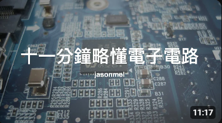
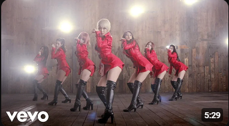
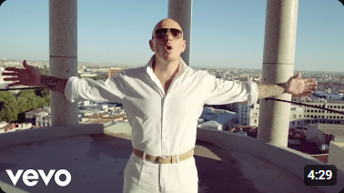
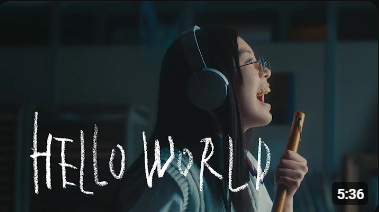
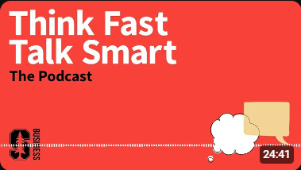
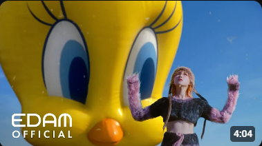
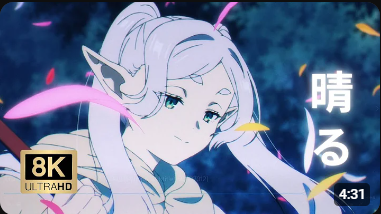
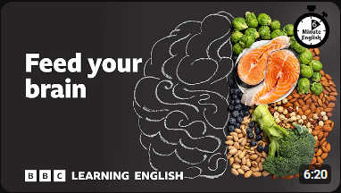
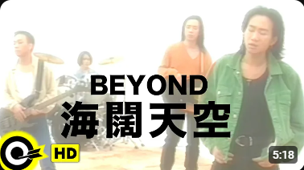

十一分鐘略懂電子電路：電、電路、電阻、電容、電感....
jasonmel
觀看次數：176萬次，1年前

AOA - Like a Cat
AOA
觀看次數：1106萬次，9年前

Pitbull - Get It Started ft. Shakira
Pitbull
觀看次數：1.1億次，11年前
JUMP MV /『NARUTO -ナルト-』×『シルエット』| KANA-BOON
ジャンプチャンネル
觀看次數：195萬次，9個月前
Elton John & Taron Egerton - Making '(I'm Gonna) Love Me Again
Elton John
觀看次數：30萬次，4年前

LiSA『HELLO WORLD』MUSiC CLiP
LiSA Official YouTube
觀看次數：122萬次，4個月前

89. Listen, Listen, Listen: How to Build Deep Connections
Stanford Graduate School of Business
觀看次數：87萬次，1年前

IU '홀씨(Holssi)' MV
이지금 [IU Official]
觀看次數：1044萬次，2個月前

【MAD】葬送的芙莉莲『放晴 / 晴る 』 - ヨルシカ
Reynald
觀看次數：71萬次，3個月前
What is climate change? - The Climate Question, BBC World...
BBC World Service
觀看次數：71萬次，3個月前

Feed your brain ⏲️ 6 Minute English
BBC Learning English
觀看次數：66萬次，2個月前

BEYOND【海闊天空】Music Video (粵) (HD)
滾石唱片 ROCK RECORDS
觀看次數：1.3億次，12年前